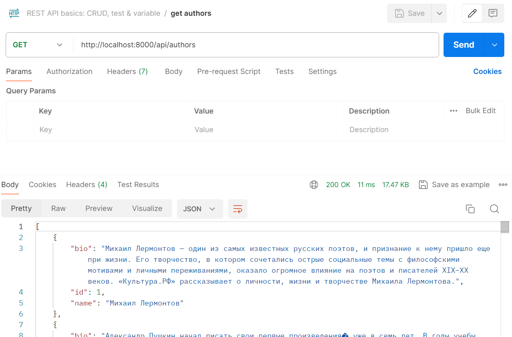
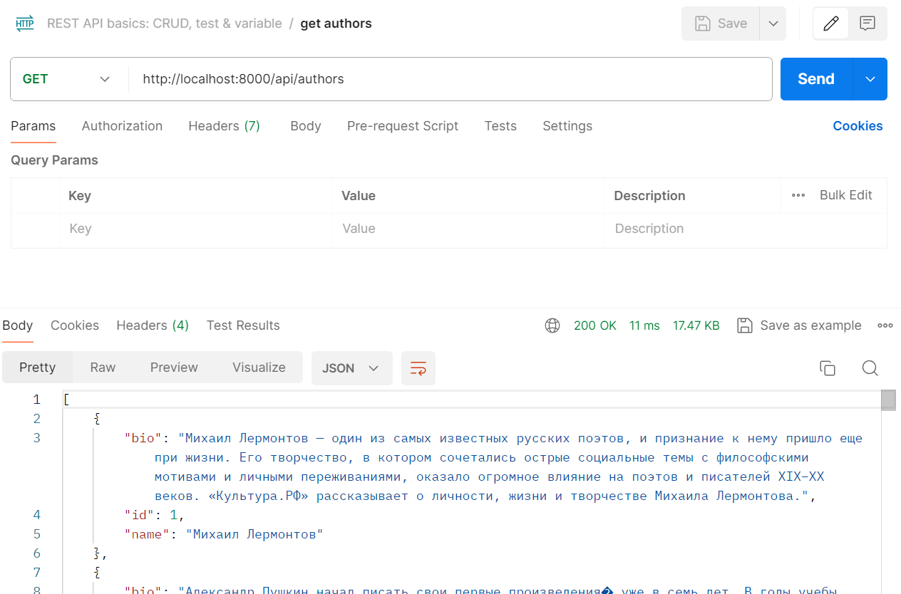

Лабораторная работа 3: Упаковка FastAPI приложения в Docker, Работа с источниками данных и Очереди
Описание задания
Цель
Научиться упаковывать FastAPI приложение в Docker, интегрировать парсер данных с базой данных и вызывать парсер через API и очередь.
Задачи 1 и 2 - задачи на минимум для сдачи - 70% баллов. Задачи 1, 2 и 3 - 100% баллов.
Подзадача 1: Упаковка FastAPI приложения, базы данных и парсера данных в Docker
Docker — это платформа для разработки, доставки и запуска приложений в контейнерах. Контейнеры позволяют упаковать приложение и все его зависимости в единый образ, который можно запускать на любой системе, поддерживающей Docker, что обеспечивает консистентность среды выполнения и упрощает развертывание. Docker помогает ускорить разработку, повысить гибкость и масштабируемость приложений. Материалы: [Основы работы с Docker](https://tproger.ru/translations/docker-for-beginners/.
-
Создание FastAPI приложения: Создано в рамках лабораторной работы номер 1
-
Создание базы данных: Создано в рамках лабораторной работы номер 1
-
Создание парсера данных: Создано в рамках лабораторной работы номер 2
-
Реулизуйте возможность вызова парсера по http Для этого можно сделать отдельное приложение FastAPI для парсера или воспользоваться библиотекой socket или подобными.
Пример кода:
from fastapi import FastAPI, HTTPException
...
app = FastAPI()
@app.post("/parse")
def parse(url: str):
try:
response = requests.get(url)
response.raise_for_status()
# Вызов парсера
return {"message": "Parsing completed", ...}
except requests.RequestException as e:
raise HTTPException(status_code=500, detail=str(e))
- Разработка Dockerfile:
- Необходимо создать Dockerfile для упаковки FastAPI приложения и приложения с паресером. В Dockerfile указать базовый образ, установить необходимые зависимости, скопировать исходные файлы в контейнер и определить команду для запуска приложения.
- Зачем: Docker позволяет упаковать приложение и все его зависимости в единый контейнер, что обеспечивает консистентность среды выполнения и упрощает развертывание.
-
Полезные ссылки:
-
Создание Docker Compose файла:
- Необходимо написать docker-compose.yml для управления оркестром сервисов, включающих FastAPI приложение, базу данных и парсер данных. Определите сервисы, укажите порты и зависимости между сервисами.
- Зачем: Docker Compose упрощает управление несколькими контейнерами, позволяя вам запускать и настраивать все сервисы вашего приложения с помощью одного файла конфигурации.
- Полезные ссылки:
Подзадача 2: Вызов парсера из FastAPI
- ** Эндпоинт в FastAPI для вызова парсера**:
- Необходимо добавить в FastAPI приложение ендпоинт, который будет принимать запросы с URL для парсинга от клиента, отправлять запрос парсеру (запущенному в отдельном контейнере) и возвращать ответ с результатом клиенту.
- Зачем: Это позволит интегрировать функциональность парсера в ваше веб-приложение, предоставляя возможность пользователям запускать парсинг через API.
- Полезные ссылки:
Подзадача 3: Вызов парсера из FastAPI через очередь
Как это работает
- Celery и Redis:
- Celery — это асинхронная очередь задач, которая позволяет легко распределять и выполнять задачи в фоне. Redis используется как брокер сообщений, хранящий задачи, которые должны быть выполнены.
-
При получении HTTP-запроса, задача ставится в очередь Redis, и Celery-воркер обрабатывает её в фоне.
-
Docker Compose:
- Docker Compose позволяет легко настроить и запустить Celery, Redis и ваше FastAPI приложение как отдельные контейнеры, работающие в одной сети. Это упрощает управление зависимостями и конфигурацией всех компонентов системы.
Почему это важно для студентов
Практические навыки настройки и использования асинхронной очереди задач в реальном приложении - первый шаг для MLops для 45 направления. Студенты научатся разделять ответственность между различными сервисами и компоновать их для достижения общей цели. В реальных проектах часто требуется выполнение сложных и длительных операций. Опыт работы с Celery и Redis подготовит к решению таких задач и даст уверенность в использовании современных технологий.
Задание
- Установить Celery и Redis:
- Необходимо добавить зависимости для Celery и Redis в проект. Celery будет использоваться для обработки задач в фоне, а Redis будет выступать в роли брокера задач и хранилища результатов.
- Зачем: Celery и Redis позволяют организовать фоновую обработку задач, что полезно для выполнения длительных или ресурсоемких операций без блокировки основного потока выполнения.
-
Полезные ссылки:
-
Настроить Celery:
- необходимо создать файл конфигурации для Celery. Определть задачу для парсинга URL, которая будет выполняться в фоновом режиме.
- Зачем: Настройка Celery позволит асинхронно обрабатывать задачи, что улучшит производительность и отзывчивость вашего приложения.
-
Полезные ссылки:
-
Обновить Docker Compose файл:
- Необходимо добавить сервисы для Redis и Celery worker в docker-compose.yml. Определите зависимости между сервисами, чтобы обеспечить корректную работу оркестра.
- Зачем: Это позволит вам легко управлять всеми сервисами вашего приложения, включая асинхронную обработку задач, с помощью одного файла конфигурации.
-
Полезные ссылки:
-
Эндпоинт для асинхронного вызова парсера:
- Необходимо добавить в FastAPI приложение маршрут для асинхронного вызова парсера. Маршрут должен принимать запросы с URL для парсинга, ставить задачу в очередь с помощью Celery и возвращать ответ о начале выполнения задачи.
- Зачем: Это позволит запускать парсинг веб-страниц в фоне, что улучшит производительность и пользовательский опыт вашего приложения.
- Полезные ссылки:
Выполнение
Упаковка rest
Dockerfile
FROM python:3.9.19-alpine3.20
WORKDIR /app
COPY requirements.txt .
RUN pip install --no-cache-dir --upgrade -r requirements.txt
COPY . .
EXPOSE 8000
CMD ["uvicorn", "main:app", "--host", "0.0.0.0", "--port", "8000"]
FROM python:3.9.19-alpine3.20 Эта строка указывает базовый образ для Docker образа.
WORKDIR /app Эта команда устанавливает рабочую директорию внутри контейнера Docker в /app. Все последующие команды будут выполняться в этой директории.
COPY requirements.txt . Эта команда копирует файл requirements.txt из текущей директории на вашем компьютере в текущую рабочую директорию контейнера Docker (/app).
RUN pip install --no-cache-dir --upgrade -r requirements.txt Эта команда запускает установку зависимостей Python, указанных в файле requirements.txt, используя пакетный менеджер pip. Флаг --no-cache-dir предотвращает сохранение временных файлов установки, что уменьшает размер конечного образа Docker. Флаг --upgrade обновляет все пакеты до последних версий, если это возможно.
COPY . . Эта команда копирует все файлы и директории из текущей директории на вашем компьютере в текущую рабочую директорию контейнера Docker (/app).
EXPOSE 8000 Эта команда указывает Docker, что контейнер будет прослушивать порт 8000. Это не открывает порт, но позволяет другим разработчикам понимать, какой порт используется.
CMD ["uvicorn", "main:app", "--host", "0.0.0.0", "--port", "8000"] Эта команда указывает, что нужно выполнить при запуске контейнера. В данном случае, это запуск сервера uvicorn с приложением, определенным в файле main.py.
requirements
fastapi
uvicorn
pydantic
sqlmodel
passlib
requests
pyjwt
starlette
sqlalchemy
psycopg2-binary
python-dotenv
httpx
Упаковка парсера
celery_worker
from celery_app import celery_app
if __name__ == "__main__":
celery_app.start()
Запускаем celery
celery_app
from celery import Celery
celery_app = Celery(
"worker",
broker="redis://redis:6379/0",
backend="redis://redis:6379/0",
)
celery_app.conf.update(
task_routes={
"tasks.parse_url_task": "main-queue",
},
)
Инициализируем Celery приложение с именем worker и настраиваем его для использования Redis как брокера и backend. Также обновляем конфигурацию Celery для маршрутизации задачи parse_url_task в main-queue.
tasks
import requests
from bs4 import BeautifulSoup
from celery_app import celery_app
from connection import DataBaseConnection
def get_bio(url):
response = requests.get(url)
html = response.text
soup = BeautifulSoup(html, 'html.parser')
text = soup.find('div', class_='xZmPc')
bio_container = text.find('div')
if bio_container.em and bio_container.em.text:
return bio_container.em.text
if bio_container.text:
return bio_container.text
@celery_app.task
def parse_url_task(url: str):
response = requests.get(url)
response.raise_for_status()
html = response.text
soup = BeautifulSoup(html, 'html.parser')
db_conn = DataBaseConnection.connect_to_database()
tasks = soup.find_all('div', class_='CHPy6')
for task in tasks:
name = task.find('div', class_='dbENL').text + ' ' + task.find('div', class_='p1Gbz').text
bio = get_bio('https://www.culture.ru' + task.a['href'])
with db_conn.cursor() as cursor:
cursor.execute(DataBaseConnection.INSERT_SQL, (name, bio))
db_conn.commit()
Определяем задачу Celery parse_url_task, которая парсит страницу и записывает авторов в базу данных.
main
from fastapi import FastAPI, BackgroundTasks
from pydantic import BaseModel
from tasks import parse_url_task
app = FastAPI()
class URLItem(BaseModel):
url: str
@app.post("/parse-url/")
async def parse_url(item: URLItem, background_tasks: BackgroundTasks):
background_tasks.add_task(parse_url_task, item.url)
return {"message": "URL parsing has been started in the background."}
@app.get("/")
async def read_root():
return {"message": "Welcome to the URL parser API!"}
Создаем экземпляр класса FastAPI. Определяем модель Pydantic для проверки входящих данных URL. Определяем POST конечную точку /parse-url/, которая принимает URL и запускает фоновую задачу для его анализа. Определяем корневую GET конечную точку /, которая возвращает приветственное сообщение.
Dockerfile
FROM python:3.9.19-alpine3.20
WORKDIR /app
COPY requirements.txt .
RUN pip install --no-cache-dir --upgrade -r requirements.txt
COPY . .
EXPOSE 3000
CMD ["uvicorn", "main:app", "--host", "0.0.0.0", "--port", "3000"]
Аналогично rest
requirements
fastapi
uvicorn
pydantic
celery
redis
requests
bs4
psycopg2-binary
python-dotenv
docker-compose
version: '3.9'
services:
celery_app:
build:
context: ./celery
dockerfile: Dockerfile
container_name: celery
restart: always
ports:
- "3000:3000"
env_file:
- .env
depends_on:
- redis
celery_worker:
build:
context: ./celery
container_name: celery_worker
command: celery -A celery_worker worker --loglevel=info
restart: always
depends_on:
- redis
- celery_app
redis:
image: redis:7.2.4
container_name: redis
ports:
- "6379:6379"
restart: always
rest:
build: ./rest
container_name: rest
ports:
- "8000:8000"
env_file:
- ./rest/.env
depends_on:
- db
- celery_app
db:
image: postgres:latest
container_name: db
ports:
- "5432:5432"
environment:
POSTGRES_USER: ${DB_USER}
POSTGRES_PASSWORD: ${DB_PASS}
POSTGRES_DB: ${DB_NAME}
volumes:
- postgres_data:/var/lib/postgresql/data
volumes:
postgres_data:
Этот код представляет собой файл docker-compose.yml, который используется для определения и запуска многоконтейнерного приложения с использованием Docker Compose. Давайте разберемся, что происходит в каждой строке кода.
version: '3.9'
- Указывает версию Docker Compose, которую нужно использовать для интерпретации файла. Версия 3.9 гарантирует, что все функции и возможности Docker Compose, которые используются в файле, будут корректно интерпретированы.
services:
- Этот раздел определяет отдельные сервисы, которые составляют ваше приложение. В данном случае у вас 6 сервисов:
celery_app,celery_worker,redis,rest,db, каждый из которых представляет отдельный контейнер Docker.
celery_app:
- build:
- context: ./celery: Указывает на директорию, где расположен файл Dockerfile для построения образа этого сервиса.
- dockerfile: Dockerfile: Определяет имя Dockerfile, которое используется для построения образа.
- container_name: celery: Задает имя контейнера.
- restart: always: Контейнер будет автоматически перезапускаться при сбое.
- ports:
- "3000:3000": Перенаправляет порт 3000 из контейнера на порт 3000 на хост-машине, позволяя доступ к сервису извне.
- env_file:
- - .env: Использует файл
.envдля загрузки переменных окружения в контейнер.
- - .env: Использует файл
- depends_on:
- - redis: Определяет, что сервис
celery_appзависит от сервисаredis. Это означает, что контейнерcelery_appбудет запущен только после того, как контейнерredisбудет запущен и готов к работе.
- - redis: Определяет, что сервис
celery_worker:
- build:
- context: ./celery: Использует тот же Dockerfile, что и сервис
celery_app, чтобы построить образ.
- context: ./celery: Использует тот же Dockerfile, что и сервис
- container_name: celery_worker: Название контейнера.
- command: celery -A celery_worker worker --loglevel=info: Определяет команду, которую нужно выполнить при запуске контейнера. В данном случае это запуск Celery worker с определенными настройками.
- restart: always: Контейнер перезапускается при сбое.
- depends_on:
- - redis: Этот сервис зависит от
redis. - - celery_app: Также зависит от
celery_app, что логично, так как для работы worker-а требуется Celery app.
- - redis: Этот сервис зависит от
redis:
- image: redis:7.2.4: Использует готовый Docker образ
redis:7.2.4для запуска Redis сервера. - container_name: redis: Название контейнера.
- ports:
- "6379:6379": Перенаправление портов.
- restart: always: Автоматический перезапуск.
rest:
- build:
- ./rest: Использует Dockerfile из директории
restдля построения образа.
- ./rest: Использует Dockerfile из директории
- container_name: rest: Название контейнера.
- ports:
- "8000:8000": Перенаправление портов.
- env_file:
- - ./rest/.env: Используется файл
.envдля загрузки переменных окружения для сервисаrest.
- - ./rest/.env: Используется файл
- depends_on:
- - db: Зависит от сервиса
db. - - celery_app: Зависит от сервиса
celery_app.
- - db: Зависит от сервиса
db:
- image: postgres:latest: Использует образ
postgres:latestдля запуска PostgreSQL сервера. - container_name: db: Название контейнера.
- ports:
- "5432:5432": Перенаправление портов.
- environment:
- POSTGRES_USER: ${DB_USER}: Устанавливает имя пользователя PostgreSQL из переменной окружения
DB_USER. - POSTGRES_PASSWORD: ${DB_PASS}: Устанавливает пароль из переменной
DB_PASS. - POSTGRES_DB: ${DB_NAME}: Устанавливает имя базы данных из переменной
DB_NAME.
- POSTGRES_USER: ${DB_USER}: Устанавливает имя пользователя PostgreSQL из переменной окружения
- volumes:
- - postgres_data:/var/lib/postgresql/data: Определяет volume
postgres_data, который будет монтироваться в директорию/var/lib/postgresql/dataв контейнереdb. Это позволит сохранять данные базы данных даже после остановки контейнера.
- - postgres_data:/var/lib/postgresql/data: Определяет volume
volumes:
- postgres_data: Определяет volume, который используется для хранения данных базы данных PostgreSQL.
В целом, этот код:
- Определяет 6 сервисов, каждый из которых представляет собой отдельный контейнер Docker.
- Устанавливает зависимости между сервисами, обеспечивая корректный запуск.
- Перенаправляет порты, чтобы сервисы были доступны извне.
- Загружает переменные окружения из файлов
.env. - Использует volumes для сохранения данных.
Результат
 
